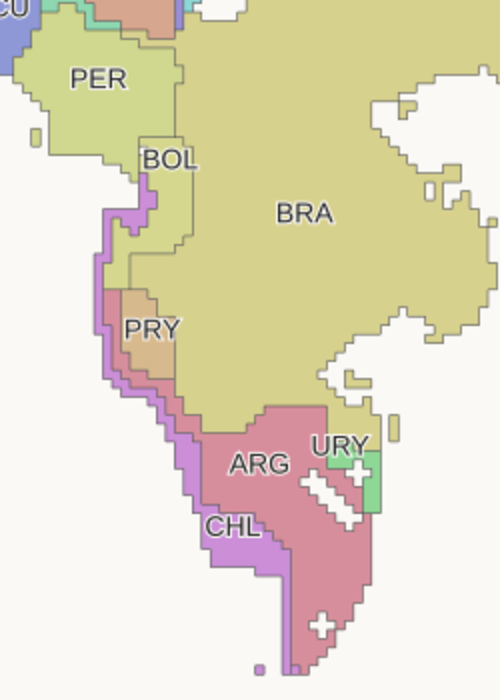
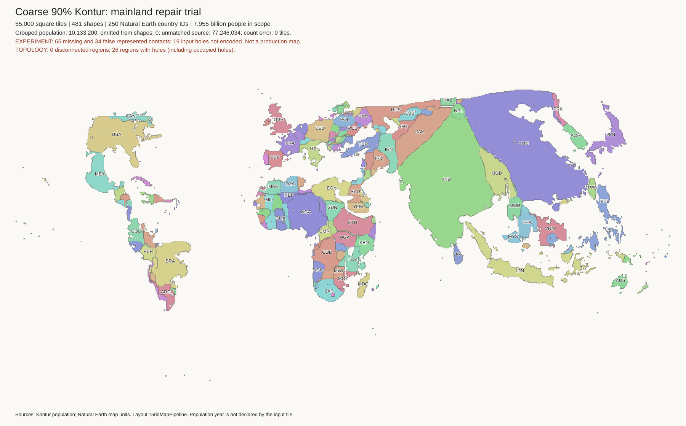
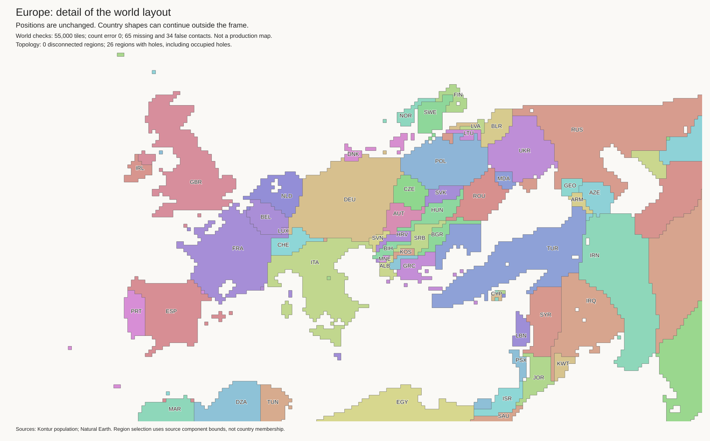
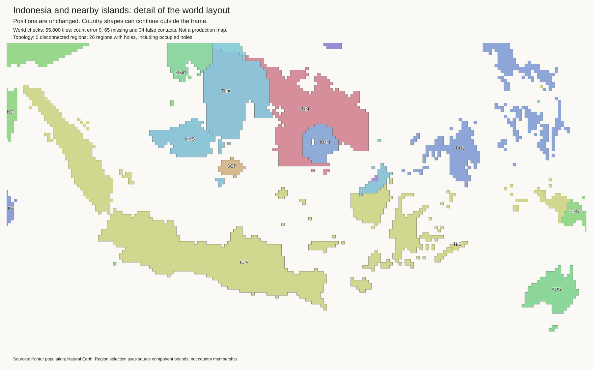
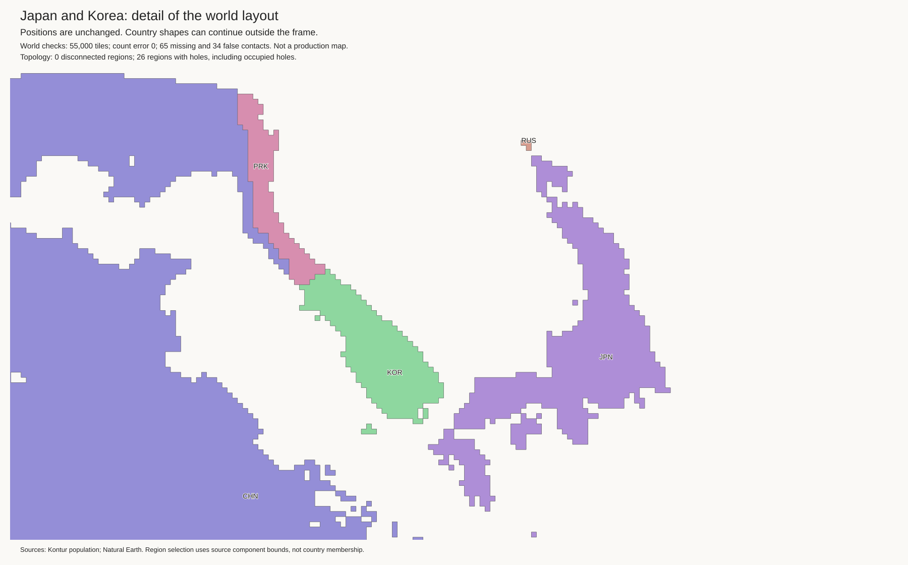
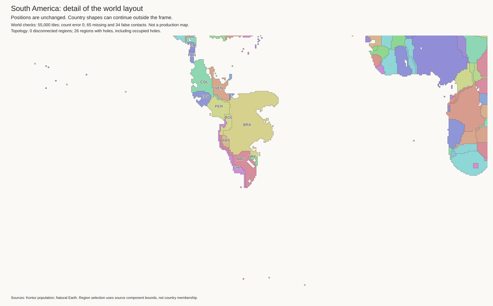
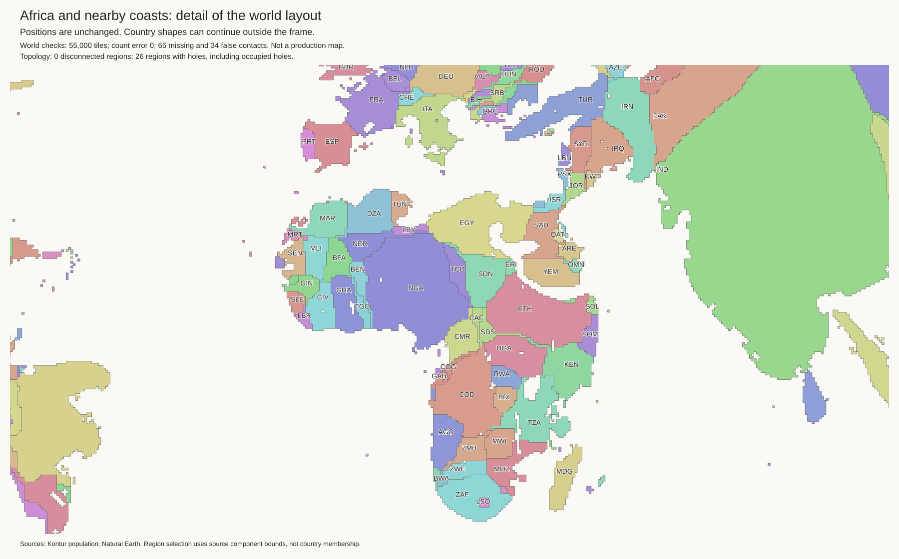

The previous Paraguay trial was rejected. It extended Argentina's false Pacific coast. This trial puts Chile between that coast and the sea. Bolivia and Paraguay have no sea edges. Chile touches Peru and Bolivia again.
Only Chile moves relative to the rejected trial. It moves 54 of its 133 tiles from the southern body to the northern coast. Its tile count stays exact. All previous true contacts, enclosed water cells, and shore labels remain. No new false contact is added.
Not approved: Chile is still too thin, and Paraguay is too far west. The large shift within Chile can distort population placement. One source-axis check also gets worse: Chile versus South Africa. Total country-axis errors rise from 218 to 219. Island-axis errors stay at 392.
Rejected Paraguay trial:

New coastal strip:

The initial coarse Kontur partition has one northern Chile tile beside Peru and Bolivia. Fragment repair deletes it. Most Chile tiles are already too far south before repair. Thus, a better fragment rule alone will not correct the shape.
The new source check compares the land neighbours at each end of a sea-coast section. Argentina's main source coast ends at Chile and Uruguay. The rejected trial adds a section between Bolivia and Chile. This section is removed in the new trial. Checks at 8,192 and 32,768 source samples agree on the source endpoints. Other coast mismatches remain near enclosed water and the southern SPI component. This is not proof that all coast geometry is correct.
Tile moves and input hashes · Coast audit before · Coast audit after
Research candidate. The current best and H3-MON data are unchanged. No strategic cuts.
All 55,000 tiles retain exact component budgets. All 481 components are connected. The 45 lakes use 220 empty cells. Lake shore checks pass.
| Check | Current best | Candidate |
|---|---|---|
| Finland touches Norway | True | True |
| Malaysia touches Thailand | False | True |
| Sweden touches Germany | True | False |
| Lithuania exterior-water edges | 0 | 2 |
| Paraguay exterior-water edges | 16 | 0 |
There are 65 missing and 34 false contacts. The current best has 73 and 48. The candidate gains 8 true contacts and loses 0. It removes 14 false contacts and adds 0. These totals do not prove correct geography.
Open issues include country shapes, remaining coast defects, and missing mainland connections. A coast can be mathematically valid but visually poor. Do not use this as a production map.
Checks and exact contact changes · Land tiles · Empty lake cells · Geographic audit





